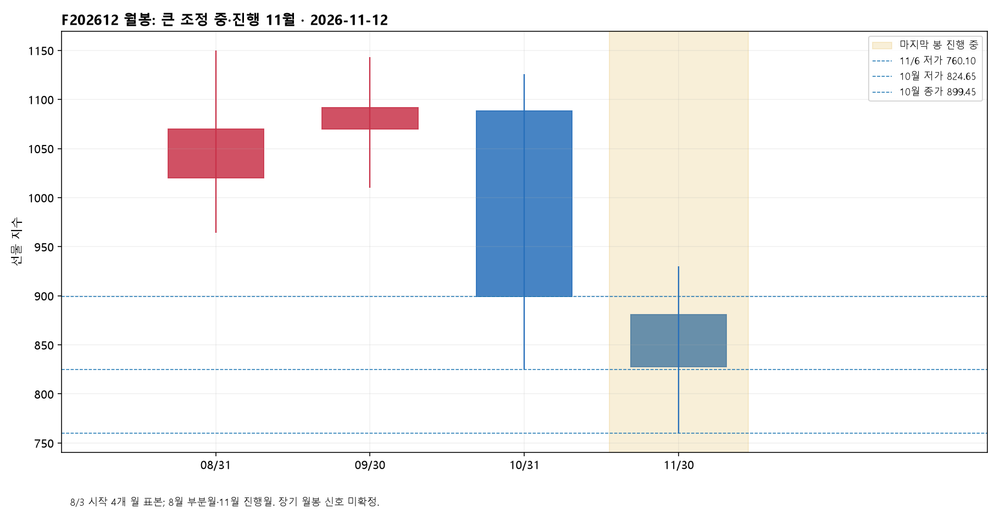
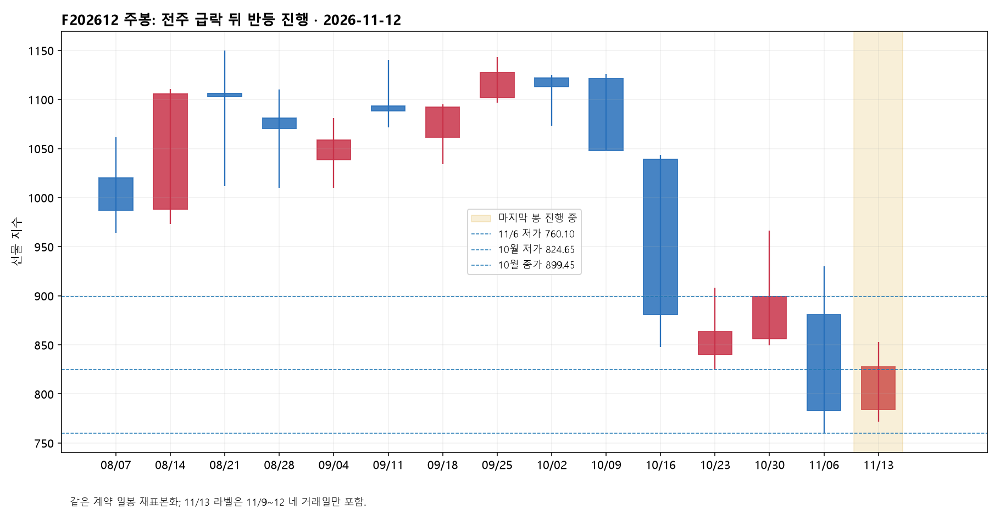
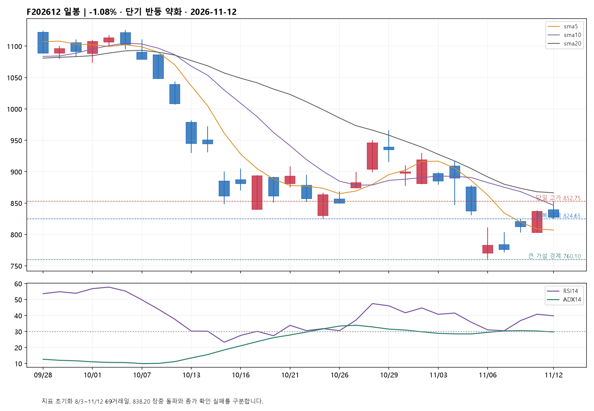
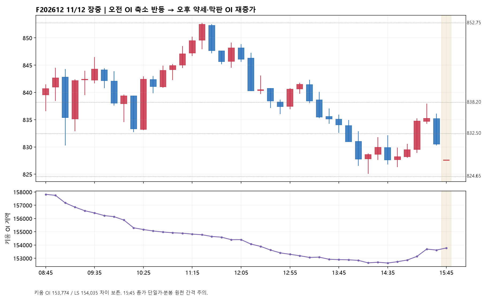
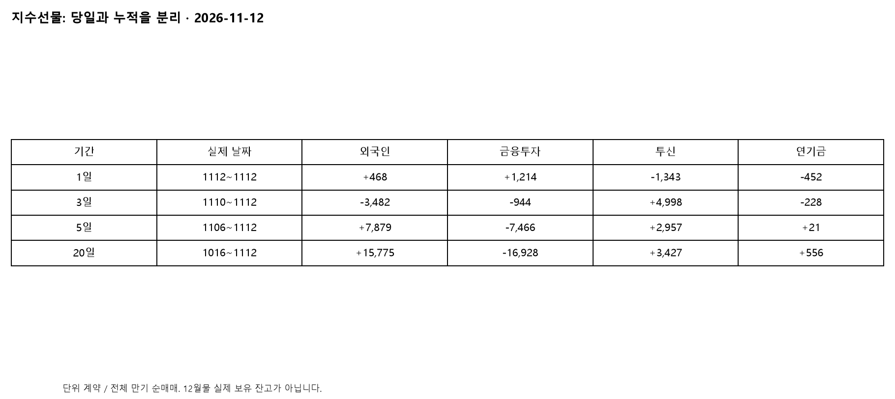
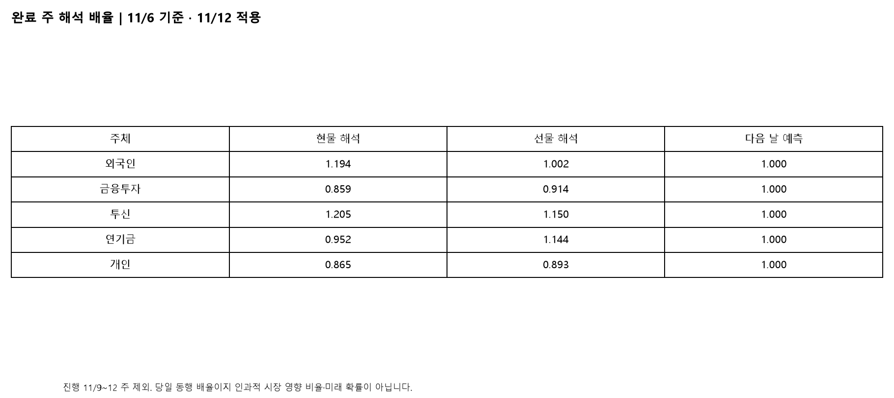
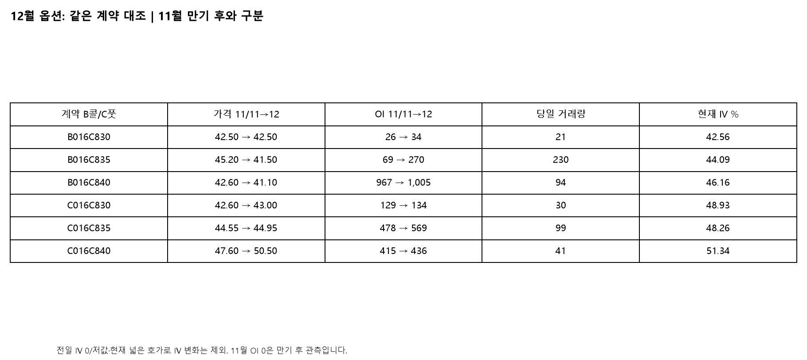

F202612 / A016C000 · 정규장 827.50 · OI 153,774 · 이후 야간 미반영
12월물 선물 827.50(-1.08%): 어제의 단기 반등 우세는 약화됐어요. 832.50 지지를 잃었고 장중 852.75까지 올랐어도 838.20 위 일봉 종가·재지지 확인은 실패했습니다. 824.65~824.95가 남아 있어 큰 회복 가설까지 폐기할 단계는 아니지만, 832.50~832.65 회복 전에는 분봉 약세를 우선합니다. 오늘은 11월 옵션 만기이며, 12월 선물 만기와는 다릅니다.
전일 11/11의 '단기 반등 우세 강화'를 그대로 유지하지 않습니다. 전일 후반 반복 저점 832.50~832.65를 오늘 종가가 밑돌았으므로 이 선은 지지가 아니라 회복 확인선으로 바뀌었습니다. 838.20은 장중 돌파했지만 일봉 종가 기준 확인은 안 됐습니다. 11/6 저점 760.10 이후 반등이 이어지는 선호 가설과, 큰 하락 중 반등이 오늘 852.75에서 소진됐다는 대안이 경쟁합니다. 세부 5파·3파 구분과 차수는 미확정이며, 760.10 이후 회복 가설의 핵심 경계를 새로운 낮은 지지선으로 바꿔 덮지 않습니다. 당일 825.05 저점은 기존 824.65(10월 저가)~824.95(11/10 고가)에 근접했을 뿐 그 가격에 정확히 재지지한 것은 아닙니다. 10분봉 832.65 위 마감 후 눌림 재지지, 이어 837.95~838.20 회복이 단기 개선 순서입니다. 838.20 위 일봉 마감과 다음 눌림 지지가 나오면 846.85(11/4 저가)와 852.75(오늘 고가)를 확인합니다. 반대로 824.65 아래 일봉 마감 후 반등 재저항이면 최근 회복 구조가 약해지고 803.20~802.95가 다음 구조 확인 구간입니다. 큰 회복 가설의 최종 경계는 760.10이며, 중간 지지와 혼동하지 않습니다.
오늘 전체 만기 지수선물 순매매는 외국인 +468계약, 금융투자 +1,214계약인 반면 투신 -1,343계약, 연기금 -452계약, 기관 합계 -647계약입니다. 외국인·금융투자가 반대편 매도를 일부 받아낸 형태지만, 순매수 주체가 있다고 가격 방어가 성공한 것은 아닙니다. 전일 투신 +1,731계약에서 오늘 매도로 돌아섰고 종가도 하락해 매수 합의가 약해졌습니다. 최근 3일(11/10~12) 외국인 -3,482·투신 +4,998계약과 최근 5일(11/6~12) 외국인 +7,879·투신 +2,957계약은 서로 다른 시간축입니다. 20일(10/16~11/12) 외국인 +15,775계약도 오늘 상승을 보장하지 않았습니다. 기관 합계와 금융투자·투신·연기금을 중복 합산하지 않으며 순매매를 실제 보유 잔고로 부르지 않습니다.
현물은 외국인·투신 순매수, 금융투자 순매도였지만 KOSPI는 하락했습니다. 금융투자는 현물을 팔고 지수선물을 샀으며, 투신은 현물을 사고 선물을 팔아 상품별 신호가 엇갈렸습니다. 주식선물 외국인 순매수 +39,115계약은 지수선물 +468계약과 별도 상품이며 계약 수를 합칠 수 없습니다. 프로그램 순매수는 당일·3일 플러스지만 5일·20일은 마이너스입니다. 현물·프로그램 금액은 LS 명세에서 고정 환산 단위를 독립 확인하지 못해 원시 단위 수치를 억원으로 바꾸지 않았습니다. 12월 선물 827.50과 KOSPI200 833.57의 종가 차이 -6.07은 LS 시장 베이시스 표시와 일치합니다. 이론 베이시스 +1.87과의 차이는 있지만 15:45 선물과 15:30 현물의 비동시 값이라 즉시 실행 가능한 차익이나 적정가격으로 단정하지 않습니다. 주도주 반응도 삼성전자 +0.73%, SK하이닉스 -1.72%로 엇갈려 반도체 전체 또는 시장 전체의 매수 확산으로 묶지 않습니다. 두 종목을 제외한 시장 전체의 투자자 수급은 미확보입니다.
08:45→12:05 선물은 840.70→846.10으로 +5.40, OI는 157,818→154,402로 -3,416계약이었습니다. 신규 매수 확대보다는 기존 포지션 축소를 동반한 반등 설명이 더 잘 맞지만 숏 청산만으로 확정할 수는 없습니다. 12:05→15:25는 가격 -15.60과 OI -789가 함께 나타나 반등 이후에도 포지션 축소가 이어졌습니다. 14:35 OI 저점 152,639 이후에는 다시 증가했고, 15:25→15:45에는 830.50→827.50 하락과 OI +161계약이 겹쳤습니다. 이 막판 구간은 하루 전체 OI 감소와 구분해야 하는 약세 확인값입니다. 다만 전체 만기 수급과 개별 12월물 OI의 범위가 달라 특정 주체의 신규 숏이라고 확정하지 않습니다. LS 시간대별 수급에는 15:45 이후에도 외국인 선물 -92→최종 +468, 콜·풋 금액의 큰 집계 변화가 있습니다. 이를 모두 정규장 마지막 체결 시각의 주문으로 돌려 해석하지 않고 지연 집계·정정 가능성을 남겼습니다.
키움 12월물 마감 OI는 153,774계약입니다. 오늘 다시 받은 전일 OI 158,324 대비 -4,550계약이며, 어제 보존된 최초 전일값 159,641과의 차이 1,317계약은 원천 정정 원인 미확인 상태로 보존했습니다. 최초값을 조용히 바꾼 것이 아닙니다. 오늘 LS OI 154,035와도 261계약 차이가 있어 두 출처를 섞지 않았습니다. 키움 일봉 거래량 122,002와 분봉 합계·LS 119,875 역시 범위 차이가 남습니다. 3월물은 별도 조회에서 거래량 51·OI 5,690(+18)이며 유동성이 작습니다. 일별 저가 820.00과 종가 819.15가 모순됐고 시세 재조회 저가는 819.15였습니다. 두 원본을 보존하고 3월물 가격 차트를 합성하거나 이 수치만으로 롤오버 규모를 확정하지 않았습니다. LS CVD는 오늘 종가 집계 +460까지만 검증됐고 미분류 2,837계약과 장중 74개 공백이 있어 완전한 매수 우위 경로로 사용하지 않습니다.
오늘 0787 원본에서 외국인은 콜 +6,452계약·+61억원, 풋 +5,426계약·+97억원으로 양쪽 모두 순매수했습니다. 콜 금액만 보고 상방 단독 베팅이라고 할 수 없습니다. 그렇다고 이 정보를 무시하지도 않습니다. 다음 만기 12월 835콜은 가격 45.20→41.50, OI 69→270(+201), 거래량 230계약이고, 835풋은 44.55→44.95, OI 478→569(+91), 거래량 99계약입니다. 양쪽 OI 증가 가운데 콜 가격은 내리고 풋 가격은 올랐으므로 '콜 신규 매수 증가가 상승을 확인했다'는 해석보다 양방향 포지션 증가 속 하방 압력이 남았다는 설명이 더 적합합니다. 각 계약에는 신규 매수와 신규 매도 양쪽이 생기며 외국인별 신규·청산 연결자료는 없습니다. 12월 835콜/풋 현재 IV 44.09%/48.26%, 델타 +0.5264/-0.4710은 제공업체 마감 후 값입니다. 전일 12월 IV에 0·비정상적으로 낮은 값이 있고 현재 호가도 넓어 IV 급증·고정 델타 스큐·기간구조를 수치 신호로 쓰지 않았습니다. 이는 거래 가능한 호가의 방향 증거가 아닙니다.
2026-11-12는 KOSPI200 11월물 옵션 만기일이고 12월 선물·옵션 만기는 12/10입니다. 만기 옵션 15:20 종료, 현물 15:30, 비만기 선물 15:45라는 서로 다른 종료 시점을 구분했습니다. 11월 830/835/840 콜·풋의 마감 후 OI가 모두 0으로 표시되므로 이를 오늘 장중 신규·청산 수량으로 해석하지 않습니다. 만기 옵션 IV 바닥값 역시 변동성 위험 소멸의 증거가 아닙니다. 만기 전 15:00→15:20 LS 시간대 누적 외국인 콜 수량은 275→3,963, 풋은 4,399→5,905계약으로 양쪽 순매수가 늘었습니다. 이는 전체 만기 합산이며 11월 특정 행사가의 신규 콜 매수 확인은 아닙니다. 내일 11/13에는 소멸한 11월물을 분석에서 분리하고, 12월 동일 계약의 가격·OI 변화가 지속되는지, 12월 선물 832.50~838.20 회복과 현물·프로그램 수급이 함께 유지되는지 확인해야 합니다. 만기 이벤트 때문에 오늘 신호를 무조건 무효화하지도, 바로 다음 날 추세로 연장하지도 않습니다.
완료 주 11/2~6까지의 20거래일로 이번 주 해석 배율을 고정했습니다. 현물 외국인 1.194·투신 1.205, 선물 외국인 1.002·투신 1.150·연기금 1.144입니다. 현물 외국인·투신의 최근 동행을 더 주의 깊게 본다는 뜻이지 시장을 움직인 인과 비중이나 미래 확률이 아닙니다. 11/9~12 진행 주는 배율 갱신에서 제외했고 모든 다음 날 예측 배율은 1.000입니다. 10/12~11/12의 검증 입력에서 외국인·투신 동반 매수와 당일 상승 뒤 다음 날 상승은 현물 3/7, 선물 1/3이고, 동반 매도·하락 뒤 다음 날 하락은 현물 4/10, 선물 0/2입니다. 표본이 작고 만기일 전용 검증도 아니어서 반대 방향 확률이나 오늘의 미래 확률로 바꾸지 않습니다. 오늘은 현물 동반 매수에도 지수가 하락했고 선물 외국인·투신 방향도 달라 해당 동반 신호가 성립하지 않았습니다.
같은 12월물 일봉은 유효 거래량이 있는 8/3~11/12 69거래일을 사용했습니다. 3거래일 가격 변화 +51.65, 5거래일 -9.75, 20거래일 -33.80은 단기 회복과 더 긴 조정의 충돌을 보여줍니다. 월봉은 8월 첫 부분월과 진행 11월, 주봉은 진행 11/9~12를 구분했습니다. 9/11~11/12 41거래일 LS 단일 원천의 전체 만기 선물 순매매는 외국인 +24,232·기관 -23,113·투신 -3,759·연기금 +740계약입니다. 이 기간은 9월 만기 이후 관찰 구간일 뿐 실제 12월물 보유 잔고·평단이 아닙니다. 보존 장부와 9/21·9/23 수급이 다르므로 두 원천을 섞지 않고 차이와 결측을 공개했습니다. 오늘 11월 옵션 만기 누적은 종료 구간으로 보존하며 12월 계약과 이어붙이지 않습니다.
보조 확인값 KOSPI 5,342.73(-0.61%), KOSPI200 833.57(-0.57%)는 같은 날짜 키움·LS 조회와 대조했습니다. KOSPI 상승 271종목 대 하락 595종목으로 상승·하락 중 상승 비율은 31.3%입니다. 외국인 현물 순매수만으로 광범위한 매수 확산이라고 보기 어려운 결과입니다. 다만 어떤 한 주체의 매도가 하락을 일으켰다는 인과까지 증명한 것은 아닙니다. 국내·해외 다중 시간대 보조 파일은 11/11, 14단계 연구는 11/10 기준이라 오늘 자료로 재사용하지 않았습니다. 오늘 선물 자체의 월·주·일·10분봉과 같은 날짜 현물 종가·폭을 핵심으로 사용합니다.

10월 종가 899.45 아래, 11월 진행 종가 827.50. 큰 하락 종료 확인 전입니다.

11/6 완료 주 종가 782.95보다 높지만 진행 주입니다. 단기 반등과 상위 조정을 구분합니다.

전일 11/11의 '단기 반등 우세 강화'를 그대로 유지하지 않습니다. 전일 후반 반복 저점 832.50~832.65를 오늘 종가가 밑돌았으므로 이 선은 지지가 아니라 회복 확인선으로 바뀌었습니다. 838.20은 장중 돌파했지만 일봉 종가 기준 확인은 안 됐습니다. 11/6 저점 760.10 이후 반등이 이어지는 선호 가설과, 큰 하락 중 반등이 오늘 852.75에서 소진됐다는 대안이 경쟁합니다. 세부 5파·3파 구분과 차수는 미확정이며, 760.10 이후 회복 가설의 핵심 경계를 새로운 낮은 지지선으로 바꿔 덮지 않습니다. 당일 825.05 저점은 기존 824.65(10월 저가)~824.95(11/10 고가)에 근접했을 뿐 그 가격에 정확히 재지지한 것은 아닙니다. 10분봉 832.65 위 마감 후 눌림 재지지, 이어 837.95~838.20 회복이 단기 개선 순서입니다. 838.20 위 일봉 마감과 다음 눌림 지지가 나오면 846.85(11/4 저가)와 852.75(오늘 고가)를 확인합니다. 반대로 824.65 아래 일봉 마감 후 반등 재저항이면 최근 회복 구조가 약해지고 803.20~802.95가 다음 구조 확인 구간입니다. 큰 회복 가설의 최종 경계는 760.10이며, 중간 지지와 혼동하지 않습니다.

08:45→12:05 선물은 840.70→846.10으로 +5.40, OI는 157,818→154,402로 -3,416계약이었습니다. 신규 매수 확대보다는 기존 포지션 축소를 동반한 반등 설명이 더 잘 맞지만 숏 청산만으로 확정할 수는 없습니다. 12:05→15:25는 가격 -15.60과 OI -789가 함께 나타나 반등 이후에도 포지션 축소가 이어졌습니다. 14:35 OI 저점 152,639 이후에는 다시 증가했고, 15:25→15:45에는 830.50→827.50 하락과 OI +161계약이 겹쳤습니다. 이 막판 구간은 하루 전체 OI 감소와 구분해야 하는 약세 확인값입니다. 다만 전체 만기 수급과 개별 12월물 OI의 범위가 달라 특정 주체의 신규 숏이라고 확정하지 않습니다. LS 시간대별 수급에는 15:45 이후에도 외국인 선물 -92→최종 +468, 콜·풋 금액의 큰 집계 변화가 있습니다. 이를 모두 정규장 마지막 체결 시각의 주문으로 돌려 해석하지 않고 지연 집계·정정 가능성을 남겼습니다.

오늘 전체 만기 지수선물 순매매는 외국인 +468계약, 금융투자 +1,214계약인 반면 투신 -1,343계약, 연기금 -452계약, 기관 합계 -647계약입니다. 외국인·금융투자가 반대편 매도를 일부 받아낸 형태지만, 순매수 주체가 있다고 가격 방어가 성공한 것은 아닙니다. 전일 투신 +1,731계약에서 오늘 매도로 돌아섰고 종가도 하락해 매수 합의가 약해졌습니다. 최근 3일(11/10~12) 외국인 -3,482·투신 +4,998계약과 최근 5일(11/6~12) 외국인 +7,879·투신 +2,957계약은 서로 다른 시간축입니다. 20일(10/16~11/12) 외국인 +15,775계약도 오늘 상승을 보장하지 않았습니다. 기관 합계와 금융투자·투신·연기금을 중복 합산하지 않으며 순매매를 실제 보유 잔고로 부르지 않습니다.

완료 주 11/2~6까지의 20거래일로 이번 주 해석 배율을 고정했습니다. 현물 외국인 1.194·투신 1.205, 선물 외국인 1.002·투신 1.150·연기금 1.144입니다. 현물 외국인·투신의 최근 동행을 더 주의 깊게 본다는 뜻이지 시장을 움직인 인과 비중이나 미래 확률이 아닙니다. 11/9~12 진행 주는 배율 갱신에서 제외했고 모든 다음 날 예측 배율은 1.000입니다. 10/12~11/12의 검증 입력에서 외국인·투신 동반 매수와 당일 상승 뒤 다음 날 상승은 현물 3/7, 선물 1/3이고, 동반 매도·하락 뒤 다음 날 하락은 현물 4/10, 선물 0/2입니다. 표본이 작고 만기일 전용 검증도 아니어서 반대 방향 확률이나 오늘의 미래 확률로 바꾸지 않습니다. 오늘은 현물 동반 매수에도 지수가 하락했고 선물 외국인·투신 방향도 달라 해당 동반 신호가 성립하지 않았습니다.

오늘 0787 원본에서 외국인은 콜 +6,452계약·+61억원, 풋 +5,426계약·+97억원으로 양쪽 모두 순매수했습니다. 콜 금액만 보고 상방 단독 베팅이라고 할 수 없습니다. 그렇다고 이 정보를 무시하지도 않습니다. 다음 만기 12월 835콜은 가격 45.20→41.50, OI 69→270(+201), 거래량 230계약이고, 835풋은 44.55→44.95, OI 478→569(+91), 거래량 99계약입니다. 양쪽 OI 증가 가운데 콜 가격은 내리고 풋 가격은 올랐으므로 '콜 신규 매수 증가가 상승을 확인했다'는 해석보다 양방향 포지션 증가 속 하방 압력이 남았다는 설명이 더 적합합니다. 각 계약에는 신규 매수와 신규 매도 양쪽이 생기며 외국인별 신규·청산 연결자료는 없습니다. 12월 835콜/풋 현재 IV 44.09%/48.26%, 델타 +0.5264/-0.4710은 제공업체 마감 후 값입니다. 전일 12월 IV에 0·비정상적으로 낮은 값이 있고 현재 호가도 넓어 IV 급증·고정 델타 스큐·기간구조를 수치 신호로 쓰지 않았습니다. 이는 거래 가능한 호가의 방향 증거가 아닙니다. 2026-11-12는 KOSPI200 11월물 옵션 만기일이고 12월 선물·옵션 만기는 12/10입니다. 만기 옵션 15:20 종료, 현물 15:30, 비만기 선물 15:45라는 서로 다른 종료 시점을 구분했습니다. 11월 830/835/840 콜·풋의 마감 후 OI가 모두 0으로 표시되므로 이를 오늘 장중 신규·청산 수량으로 해석하지 않습니다. 만기 옵션 IV 바닥값 역시 변동성 위험 소멸의 증거가 아닙니다. 만기 전 15:00→15:20 LS 시간대 누적 외국인 콜 수량은 275→3,963, 풋은 4,399→5,905계약으로 양쪽 순매수가 늘었습니다. 이는 전체 만기 합산이며 11월 특정 행사가의 신규 콜 매수 확인은 아닙니다. 내일 11/13에는 소멸한 11월물을 분석에서 분리하고, 12월 동일 계약의 가격·OI 변화가 지속되는지, 12월 선물 832.50~838.20 회복과 현물·프로그램 수급이 함께 유지되는지 확인해야 합니다. 만기 이벤트 때문에 오늘 신호를 무조건 무효화하지도, 바로 다음 날 추세로 연장하지도 않습니다.
작성 2026-11-12T17:27:51.133626+09:00 · 조건부 해설, 주문·비중 지시 아님